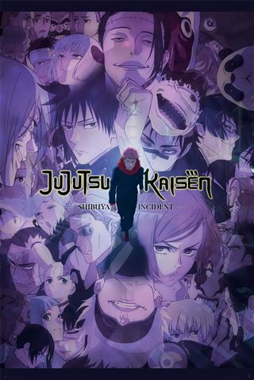
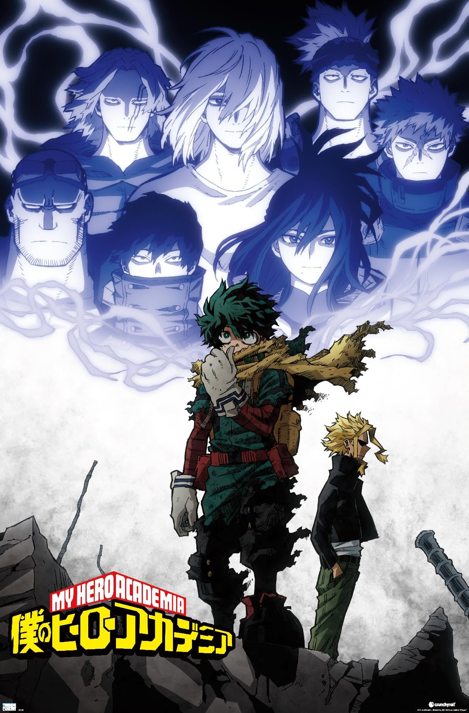
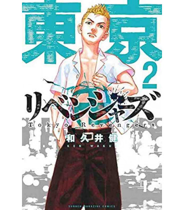
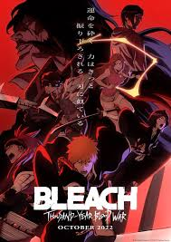
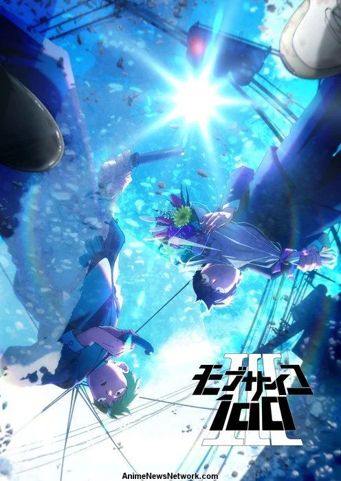
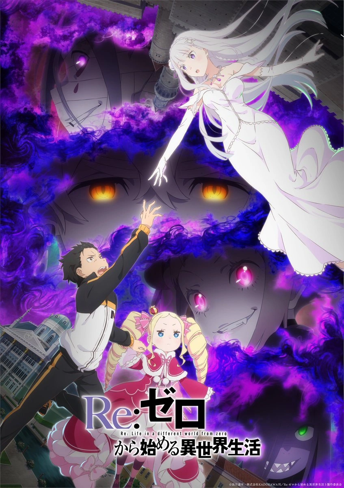
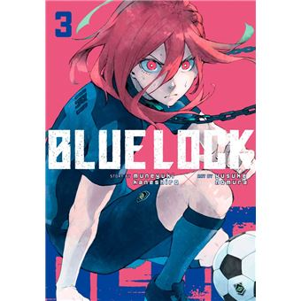
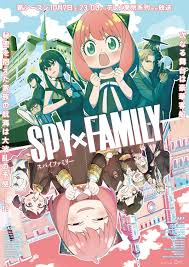

-

Jujutsu Kaisen: Shibuya Incident
Continuação da luta contra maldições em Shibuya, onde os feiticeiros enfrentam novos desafios e inimigos poderosos.
-

My Hero Academia: Season 6
A batalha entre heróis e vilões se intensifica, com novos personagens e reviravoltas emocionantes.
-

Tokyo Revengers: Season 2
Takemichi continua sua luta para salvar sua namorada, navegando entre gangues e sua própria linha do tempo.
-
Chainsaw Man
Denji se torna um caçador de demônios após fazer um pacto com seu demônio de estimação, buscando uma vida melhor.
-

Bleach: Thousand-Year Blood War
A batalha final entre os shinigamis e os Quincy começa, com revelações que mudam o curso da história.
-

Mob Psycho 100: Season 3
Mob enfrenta novos desafios enquanto tenta controlar seus poderes psíquicos e viver uma vida normal.
-

Vinland Saga: Season 2
A história de Thorfinn continua, explorando temas de vingança, redenção e a luta pela sobrevivência.
-

Re:Zero - Starting Life in Another World: Season 3
Subaru retorna ao mundo de fantasia, enfrentando novos desafios e profundos dilemas emocionais.
-

Blue Lock
Um programa de treinamento para jogadores de futebol visa criar o atacante mais forte do Japão.
-

SPY x FAMILY: Season 2
A família de espiões e assassinos continua sua vida disfarçada, enfrentando novas ameaças e desafios engraçados.